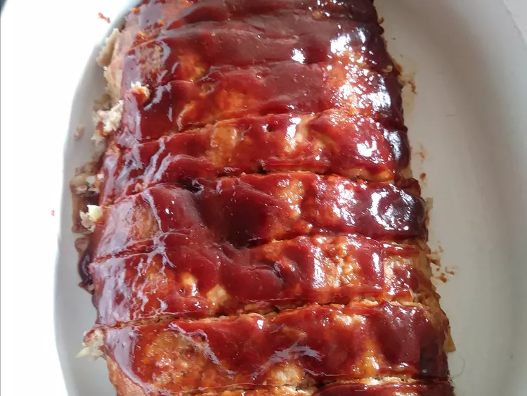

Turkey Meatloaf

Description
Meatloaf isn't often associated with
healthy eating, but this recipe replaces
the standard ground beef with ground turkey,
which has less saturated fat, but still gives
the meatloaf delicious flavor and texture.
Ingredients
- 1 ½ pounds ground turkey
- ¾ cup crushed buttery round crackers
- ½ cup milk
- 1 small onion, chopped
- 1 egg
- 2 cloves garlic, minced
- 1 ½ teaspoons salt
- ¼ teaspoon ground black pepper
- ½ cup ketchup
- ¼ cup brown sugar
- 1 tablespoon Worcestershire sauce
Steps
- Preheat the oven to 350 degrees F (175 degrees C).
Lightly grease a jelly-roll pan.
- Mix ground turkey, crushed crackers, milk, onion,
egg, garlic, salt, and black pepper in a bowl.
Shape mixture into a loaf and place on the prepared pan.
- Mix ketchup, brown sugar, and Worcestershire
sauce in a separate bowl; set aside.
- Bake meatloaf in preheated oven for 30 minutes;
remove from the oven and drain off liquids.
Top meatloaf with ketchup topping.
- Return loaf to the oven and continue baking
until no longer pink in the center, about
30 minutes more; an instant-read thermometer
inserted into the center should read at least
160 degrees F (71 degrees C).